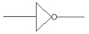
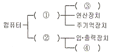
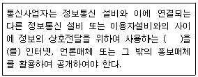

정보기기운용기능사 (2007-04-01 기출문제)
1과목: 전산 기초 이론
1. 10진수 9를 3-초과 코드(Excess-3)로 표현한 것 중 옳은 것은?
- 0011
- 1111
- 1100
- 1010
(정답률: 69%)

2. 다음 그림은 무슨 게이트 회로인가?

- AND게이트(Gate) 회로
- OR게이트(Gate) 회로
- NOT게이트(Gate) 회로
- NAND게이트(Gate) 회로
(정답률: 81%)
3. 언어번역기 프로그램에 해당되지 않는 것은?
- 어셈블러(assembler)
- 컴파일러(compiler)
- 인터프리터(interpreter)
- 작업스케줄러(job scheduler)
(정답률: 82%)
4. 출력장치에 해당되지 않는 것은?
- 카드리더
- 모니터
- 라인프린터
- X-Y 플로터
(정답률: 75%)
5. 10진수 110을 2진법으로 변환한 것 중 옳은 것은?
- (1100110)2
- (1100111)2
- (1101101)2
- (1101110)2
(정답률: 69%)
6. 다음은 컴퓨터의 하드웨어 구성표이다. 잘못 채워진 것은?

- ① 중앙처리장치
- ② 신호장치
- ③ 제어장치
- ④ 보조기억장치
(정답률: 80%)
7. 입력 A, B가 서로 다른 경우에만 1의 출력을 갖는 Gate는?
- EX-NOR
- NOR
- EX-OR
- NAND
(정답률: 74%)
8. 다음 중 데이터 발생 즉시 처리하는 방법으로 은행창구업무처리 등에 유용한 시스템은 어느 것인가?
- 일괄처리방식(Batch Processing)
- 실시간처리방식(Real Time Processing)
- 시분할처리방식(Time Sharing Processing)
- 오프라인처리방식(Off-Line Processing)
(정답률: 89%)
9. 다음 중 조합논리회로의 특성에 해당되지 않는 것은?
- 출력은 입력신호의 값에 따라 결정된다.
- 기억 능력이 없다.
- 출력은 입력신호와 이전의 입력신호에 따라 결정된다.
- 논리게이트의 조합으로 구성된다.
(정답률: 47%)
10. 다음 중 순서도 작성의 필요성과 거리가 먼 것은?
- 프로그램 coding의 기초 자료가 된다.
- 작성된 프로그램을 기계어로 번역할 때 요구된다.
- 프로그램의 수정 및 인수인계를 쉽게 한다.
- 완성된 프로그램의 오류와 정확성을 검증하는 자료가 된다.
(정답률: 67%)
2과목: 정보 기기 운용
11. 10Ω의 저항에 10A의 전류를 20분 동안 흘렀다. 이 때 발생하는 열량은 몇 J인가?
- 1×104
- 2×105
- 12×104
- 12×105
(정답률: 51%)
12. 컴퓨터에서 프롬프트가 A일 때 C 디스크의 파일 목록을 보려고 한다. 이때 사용해야 할 명령 형식으로 맞는 것은?
- dir c:
- c:
- dir/w
- dir/p
(정답률: 79%)
13. 다음 중 시분할다중화기(TDM)의 특징이 아닌 것은?
- 한 전송로의 데이터 전송시간을 일정한 시간 폭으로 나누어 전송하는 방식이다.
- 1200bps 이하의 비동기식에서만 사용한다.
- 단말기와의 속도차를 극복하기 위해 버퍼가 필요하다.
- 주파수분할 다중화기보다 고속이다.
(정답률: 76%)
14. 비디오텍스에서 도형정보의 표현 형식이 아닌 것은?
- mosaic방식
- laser 방식
- geometric 방식
- photographic 방식
(정답률: 58%)
15. 보조기억매체(자기디스크)의 관리 방법으로 잘못된 것은?
- 적당한 온도와 습도가 유지되는 곳에 보관한다.
- 직사광선을 피하도록 한다.
- 자력이 있는 곳에 보관한다.
- 기록매체의 노출된 면을 접촉하지 않도록 한다.
(정답률: 87%)
16. 내부저항 200Ω인 정보기기에서 50W가 소모되었다고 하면 흐르는 전류는 몇 A인가?
- 0.1
- 0.5
- 1
- 2
(정답률: 58%)
17. 입력된 자료의 다음 처리를 위하여 일시적으로 자료를 보관하는 것은?
- 메일머지(mail-merge)
- 윈도우(window)
- 버퍼(buffer)
- 롬(ROM)
(정답률: 73%)
18. 저항에 전류가 흐를 때 저항에 생기는 전위차는?
- 전류
- 전력
- 저항
- 전압 강하
(정답률: 61%)
19. 다음 중 전자우편의 보안과 관계가 먼 것은?
- CGI
- PGP
- PEM
- S/MIME
(정답률: 50%)
20. 국산 전자교환기의 명칭에 해당되지 않는 것은?
- TDX-1A
- TDX-1B
- TDX-2
- TDX-10
(정답률: 53%)
21. 다음 화상 통신기기 중 특정의 수신자에게만 서비스하는 것을 목적으로 한 폐회로 텔레비전은?
- CATV
- CCTV
- HDTV
- VIDEOTEX
(정답률: 69%)
22. 콘덴서 2μF, 3μF, 6μF를 직렬로 연결하였을 때 합성 정전 용량은 몇 μF인가?
- 0.5
- 1
- 2
- 4
(정답률: 74%)
23. n개의 건전지를 병렬로 연결하였을 때 올바른 설명은?(단, r : 건전지 내부저항)
- 전압은 일정하고 내부저항은 n/r 이다.
- 전류의 용량은 n배이고 내부저항은 n/r 이다.
- 전압은 일정하고 내부저항은 r/n 이다.
- 전류의 용량은 일정하고 내부저항은 r/n 이다.
(정답률: 55%)
24. 컴퓨터에서 패스워드를 보호하기 위한 조치 중 가장 올바른 것은?
- 패스워드는 변경할 필요가 없다.
- 다른 사람들이 추측 가능한 것으로 사용한다.
- 정기적으로 패스워드를 변경한다.
- 패스워드를 친구에게 가르쳐준다.
(정답률: 80%)
25. 다음 중 충격 방식의 프린터는?
- 잉크젯 프린터
- 도트 프린터
- 레이저 프린터
- 열전사 프린터
(정답률: 70%)
26. 전산실이나 컴퓨터실에 정전이 되거나 전원 공급이 안될 때 일정 시간 동안 전원을 공급시켜주는 역할을 하는 장비는?
- AVR
- UPS
- 코드접속기
- Surge Protector
(정답률: 74%)
27. 다음 중 프린터와 관계없는 단위는?
- LPM
- CPI
- IRG
- CPS
(정답률: 79%)
28. 컴퓨터 등의 디스플레이(display)를 장시간 보면서 작업함으로써 두통, 시각장애, 등의 증세가 나타나는 것을 무엇이라고 하는가?
- VDT 증후군
- V3 증후군
- DOS 증후군
- HDD 증후군
(정답률: 85%)
29. 다음 중 다중화기에 대한 설명으로 옳지 않은 것은?
- 데이터 전송의 효율화를 목적으로 개발되었다.
- 각 저속단말기의 속도 합과 고속 채널의 속도 합이 같다.
- 지능 다중화기는 집중화기의 역할도 수행한다.
- DSU는 디지털용 다중화기이다.
(정답률: 43%)
30. 디지털신호를 기계장치가 빠르게 처리할 수 있도록 하는 집적회로를 말하는 것으로 최근에는 아날로그 신호인 음성을 디지털화 하는 음성 코딩에 사용되기도 하는 것은?
- DSP(digital signal processor)
- MODEM
- DTE(data terminal equipment)
- AMP
(정답률: 57%)
3과목: 정보 통신 일반
31. 다음 중 정보화 사회의 설명으로 가장 적합한 것은?
- 공업기술의 비중이 높은 사회이다.
- 토지의 생산력이 높게 평가되는 사회이다.
- 정보의 가치가 물질의 가치에 비해 상대적으로 높은 사회이다.
- 집중화된 지역사회 유형의 특징을 갖는 사회이다.
(정답률: 76%)
32. 광섬유케이블에서 광신호가 전송되는 부분은?
- 코어(core)
- 클래드(clad)
- 피이(PE) 절연물
- 인장선
(정답률: 85%)
33. 통신신호의 전송품질의 중요한 척도가 되는 S/N 비를 바르게 설명한 것은?
- 원 신호에 대한 잡음의 상대적인 크기의 비율이다.
- 정상 전송속도에 대한 지연속도의 비율이다.
- 송신신호에 대한 수신신호의 세기 비율이다.
- 출력신호 파형의 일그러짐을 말한다.
(정답률: 62%)
34. 다음 중 변조속도의 단위로 적합한 것은?
- Sec
- Baud
- Hz
- dB
(정답률: 61%)
35. 캐리어 신호(carrier signal)의 피크 투 피크(peak to peak) 전압이 전송하는 신호의 크기에 따라 변하는 변조 방식은?
- 진폭 변조
- 주파수 변조
- 위상 변조
- 파장 변조
(정답률: 60%)
36. 헤딩과 텍스트로 이루어진 정보 메시지가 3개의 블록으로 분할되어 전송될 경우 최종 블록에 들어갈 전송 제어문자는?
- ETB
- ETX
- EOT
- STX
(정답률: 49%)
37. 전송데이터의 에러체크방식 중 수신 단에서 송신 단으로 재송신을 요청하는 방식은?
- 패리티 체크방식
- FEC 방식
- ARQ 방식
- CRC-16 방식
(정답률: 69%)
38. 이동전화 시스템에서 CDMA 방식의 의미는?
- 채널분할 다중화방식
- 코드분할 다중접속방식
- 캐리어 변복조방식
- 콤팩트디스크 다중접속방식
(정답률: 79%)
39. LAN의 네트워크 형태와 가장 관계가 먼 것은?
- 스타(star) 형
- 링(ring) 형
- 버스(bus) 형
- 그물(mash) 형
(정답률: 56%)
40. PC 터미널이 8개가 설치된 시스템에서 각 터미널 상호간용 망형으로 결선하려면 필요한 회선 수는?
- 8회선
- 16회선
- 28회선
- 42회선
(정답률: 60%)
41. OSI 7계층 모델 중 논리적 링크라고 불리는 가상회로와 가장 밀접한 것은?
- 데이터링크 계층
- 네트워크 계층
- 트랜스포트 계층
- 세션 계층
(정답률: 48%)
42. 다음 중 LAN과 관련된 용어가 아닌 것은?
- ETHERNET
- TOKEN-RING
- CSMA/CD
- IMT-2000
(정답률: 57%)
43. 화상통신 서비스 중 센터 대 단말형의 회화형 화상정보 시스템은?
- TV 전화
- 팩시밀리
- CCTV
- 화상응답시스템
(정답률: 74%)
44. 회선교환방식의 실시간 처리능력과 패킷교환방식의 트래픽 처리능력 등의 장점을 결정하여 발전시킨 교환방식은?
- ATM 교환방식
- 셀룰러 교환방식
- INTERNET 교환방식
- 축적 교환방식
(정답률: 50%)
45. 다음 중 국제통신에 주로 이용되는 통신위성(INTELSAT)의 위치로 적합한 것은?
- 북회귀선 상공
- 지자극점 상공
- 적도 상공
- 남극점 상공
(정답률: 72%)
46. 데이터 전송매체로서 잡음과 보안에 가장 우수한 것은?
- 가입전화선
- 광섬유케이블
- 동축케이블
- M/W 무선회선
(정답률: 75%)
47. 다음 중 정보전달의 5단계를 순서대로 나열한 것은?
- 링크확립→링크절단→메시지전달→회로연결→회로절단
- 회로연결→링크확립→메시지전달→링크절단→회로절단
- 회로절단→링크절단→링크확립→회로연결→메시지전달
- 링크절단→메시지전달→링크확립→회로절단→회로연결
(정답률: 83%)
48. 단말 인터페이스 장치를 X시리즈와 V시리즈로 나누는 근거는 어디에 두고 있는가?
- 전송회선
- 부가통신회선
- 접속커넥터
- 전압레벨
(정답률: 56%)
49. 다음 중 지점 간을 직접 접속하는 형태의 회선은?
- 전용회선
- 부가통신회선
- 패킷교환회선
- 공중회선
(정답률: 67%)
50. 다음 중 마이크로파(microwave) 통신방식과 관계없는 것은?
- 전자파를 이용하는 무선통신방식이다.
- 광을 이용하므로 전송속도가 빠르다.
- 이동통신 수단으로도 이용되고 있다.
- 중계거리를 고려하여야 한다.
(정답률: 63%)
4과목: 정보 통신 업무 규정
51. 다음 ( )안에 들어갈 내용으로 가장 적합한 것은?

- 통신구조
- 기능표준
- 통신규약
- 기술수준
(정답률: 81%)
52. 전기통신을 행하기 위하여 계통적, 유기적으로 연결 구성된 전기통신설비의 집합체는?
- 전송설비망
- 교환설비망
- 전기통신망
- 종합정보통신망
(정답률: 80%)
53. 전기통신사업자의 역무제공의무 등에 관한 원칙으로 볼 수 없는 것은?
- 전기통신사업자는 정당한 사유 없이 전기통신여무의 제공을 거부하여서는 아니 된다.
- 전기통신사업자는 그 업무처리에 있어서 공평, 신속 및 정학을 기하여야 한다.
- 전기통신역무의 요금은 이용자가 편리하고 다양한 전기통신역무를 공평, 저렴하게 제공받을 수 있도록 합리적으로 결정되어야 한다.
- 역무의 제공시 국가의 보위 및 안보에 관한 통신보안규제를 홍보하도록 한다.
(정답률: 67%)
54. 정보통신서비스제공자 및 이용자의 책무가 아닌 것은?
- 정보통신서비스 제공자는 이용자의 개인정보를 보호하여야 한다.
- 정보통신서비스 제공자는 정보화 사회 조성을 위한 금융지원을 하여야 한다.
- 정보통신서비스 제공자는 이용자의 권익보호와 정보이용 능력의 향상에 이바지하여야 한다.
- 이용자는 건전한 정보사회가 정착되도록 노력하여야 한다.
(정답률: 72%)
55. “정보통신망 이용촉지 및 정보보호 등에 관한 법률”의 제정 목적과 거리가 먼 것은?
- 국민생활의 향상
- 정보통신사업의 경영
- 공공복리의 증진에 이바지
- 정보통신서비스를 이용하는 자의 개인정보 보호
(정답률: 49%)
56. 다음 중 전기통신사업의 경영자는?
- 부가통신사업자
- 정보통신공사업자
- 통신기기제조업자
- 정보통신부장관
(정답률: 42%)
57. 우리나라의 전기통신에 관한 사항은 전기통신기본법 또는 다른 법률에 특별히 규정한 것을 제외하고는 누가 관장하는가?(정보통신부가 없어지면서 답이 바뀌었습니다. 여기서는 정답을 2번 처리 합니다.)
- 대통령
- 정보통신부장관
- 국무총리
- 한국통신사장
(정답률: 77%)
58. 다음 중 전기통신사업자의 의무로 적합하지 않은 것은?
- 이용약관의 변경
- 이용자의 보호
- 이용약관의 신고
- 이용약관의 유출 방지
(정답률: 44%)
59. 정보화촉진 등을 위하여 정보화촉진기본계획은 누가 수립하는가?
- 국무총리
- 과학기술부장관
- 정보통신부장관
- 산업자원부장관
(정답률: 68%)
60. 공공기관의 정보화촉진 등을 지원하고 정보화관련 정책개발을 지원하기 위하여 설립한 기관은?
- 통신위원회
- 한국정보보호진흥원
- 한국정보통신기술협회
- 한국정보사회진흥원
(정답률: 38%)